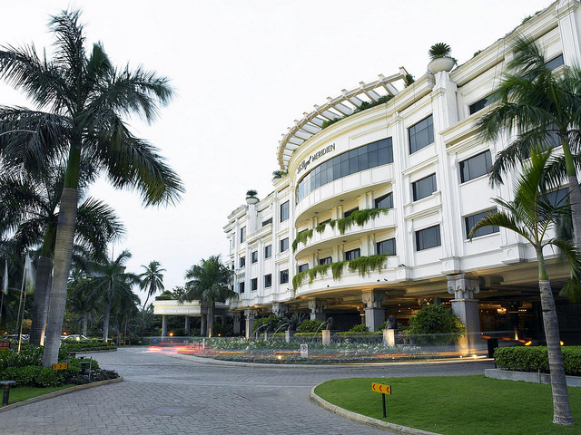

Le Royal Méridien
Welcome To Le Royal Méridien
The Raintree Hotels - Chennai, India
Once a tiny fishing village, Chennai (formerly Madras) is now a lively metropolis and the capital of the state of Tamil Nadu.
Situated on 3.5 acres of exquisitely landscaped gardens, the architectural wonder of Le Royal Méridien Chennai inspires guests to explore the city’s allegiance to ancient traditions.
Located between the international airport and the business district, Le Royal Méridien Chennai features meeting and banquet space for up 1,500 guests, five restaurants and bars, a state-of-the-art fitness centre, and a splendid outdoor pool with whirlpool.
A travel desk is in the hotel’s lobby assists guests as they experience the sights of Chennai, including the Marina Beach, temple architecture, a vibrant theatre scene, and a five week-long Music Season, one of the world’s largest cultural events.